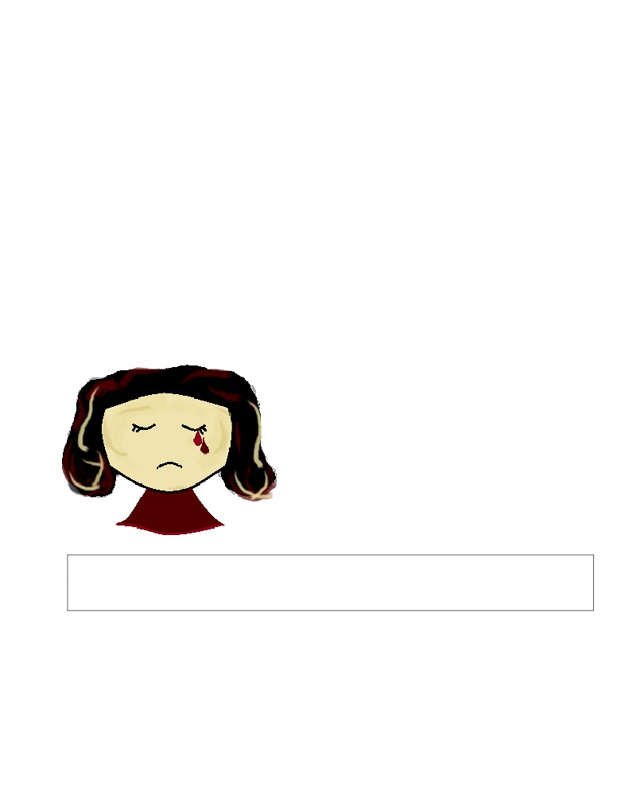
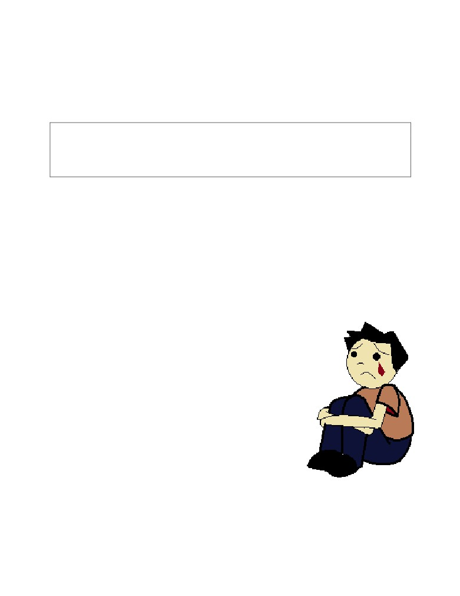

Pușcaș ndreea-Maria
Sgr. 8 ATELIER
REPORTAJ/ SUFERINȚĂ FĂRĂ GRANIȚE
“M-am gândit de multe ori că dacă părinții mei m-au lăsat, fiecare persoană care va
aparea în viața mea va face la fel într-o zi”
Zilnic, sute de copii din întreaga țară trec prin despărțirea vieții
lor, cea de părinți. Din cauza situației financiare precare și din dorința
adulților de a le oferi un trai mai bun, micuții își încep propria luptă
prea devreme. Adesea, neglijând partea emoțională a unei familii,
părinții pleacă de nevoie, disperați, în goana după bani.
Cu atât mai mult în perioada sărbatorilor, copiii aceștia preferă
un sărut sincer pe frunte în defavoarea cadourilor. Ar alege oricând o
ceartă normală cu mama în locul liniștei înfricoșătoare din cameră.
Maria, o fată de 14 ani din Județul Suceava
este doar un caz printre zecile de mii din țară.
Aceasta a rămas în grija bunicilor de la vârsta de 9
ani, iar de atunci a învățat cum este să râzi, dar și să
plângi singură. Bunicii, ocupați mai mult cu munca
din gospodărie, au încercat pe cât posibil să o susțină
la școală. Își amintește și acum, cu detalii, ziua când
părinții ei au iesit pe ușă cu o sacoșă albastră de rafie
și nu s-au mai întors.
„Sunt în Italia de atunci, nu știu de ce nu vor să vină nici măcar în vacanțe, poate își
riscă locul de muncă... Eu oricum am obosit să mai sper să-i strâng în brațe, nici nu știu ce
le-aș spune dacă ar fi în fața mea...”
Este de neimaginat cum un copil sau un adolescent trece prin atât de multe
experințe noi și nu are cui să le povestească. Este dureros cum poate plânge ore în
șir la sfârșit de zi, iar mai apoi de undeva din interior să își impună putere. Cu toate
acestea, nu îi lipsește nimic, crede bunica sa, pentru că părinții au grijă să îi trimită
din străinătate, pachete cu dulciuri, haine, bani. Însă, din păcate, ceea ce este cel mai
de preț, afecțiunea părintească, nu poate fi transmisă printr-un apel video.
P.S. Din cauza faptului ca nu am putut publica imagini, am ales să realizez eu cele doua ilustrații ale
articolului, în Paint.

Pușcaș ndreea-Maria
Sgr. 8 ATELIER
MAJORITATEA COPIILOR CU PĂRINȚII ÎN
STRĂINĂTATE NU SUNT STABILI EMOȚIONAL
“M-am gândit de multe ori că dacă părinții mei m-au lăsat, fiecare persoană
care va aparea în viața mea va face la fel într-o zi. Pot spune că la 14 ani înțeleg cât
de mult m-a afectat de fapt plecarea lor și cât de mult mă dezamăgește ignoranța
lor de acum. Nu am încredere în oameni și nici în mine.”
“ȘI NOUĂ NE E GREU” au spus părinții Mariei într-un scurt apel
telefonic. Atunci de ce nu fac nimic? Cei doi soți au plecat la muncă în străinătate
încă de acum cinci ani, pentru că aici, în România, nu își găseau un loc de muncă ce
le-ar fi putut îndeplini una din marile lor dorințe, aceea de a avea un cămin mai
spațios. Acum, după atât de mult timp în care copilul lor a suferit, aceștia nu au făcut
nici un efort în a-și demonstra calitatea de părinți. Banii nu sunt totul,dar Maria a fost
de mică nevoită să creadă că ei valorează mai mult decât ea.
În anul 2018, conform situației copiilor cu
părinți plecați în străinătate declarată de MEN/ISJ,
în Județul Suceava s-au înregistrat 11.078 de
cazuri de acest fel, fiind pe locul II după Iași cu
11.573 de cazuri. Maria este doar o poveste dintre
acestea, este doar un exemplu al unei mari
probleme din România. În 2018 un număr colosal
de 159.038 de copii au avut cel puțin un părinte
plecat din țară. Oare câți dintre ei plâng de dor
chiar acum?
P.S. Din cauza faptului ca nu am putut publica imagini, am ales să realizez eu cele doua ilustrații ale
articolului, în Paint.
Pușcaș ndreea Maria
GR. IV JURNALISM RO